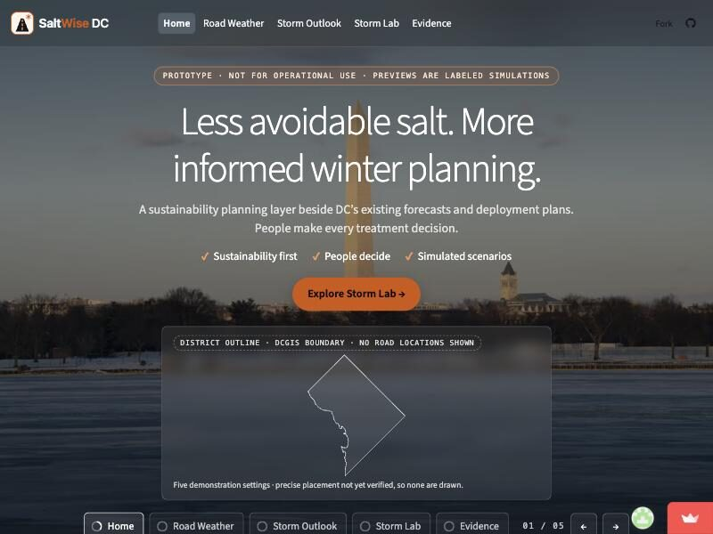
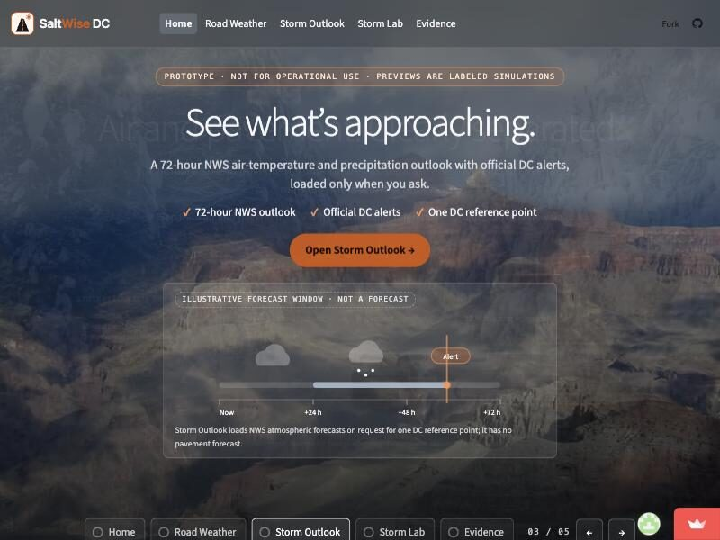
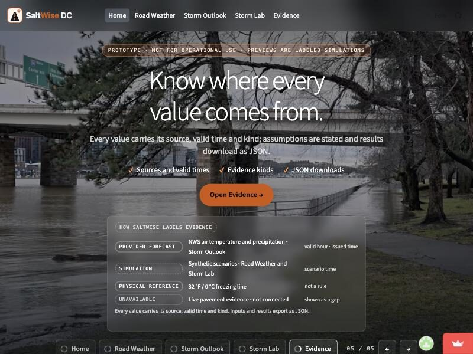
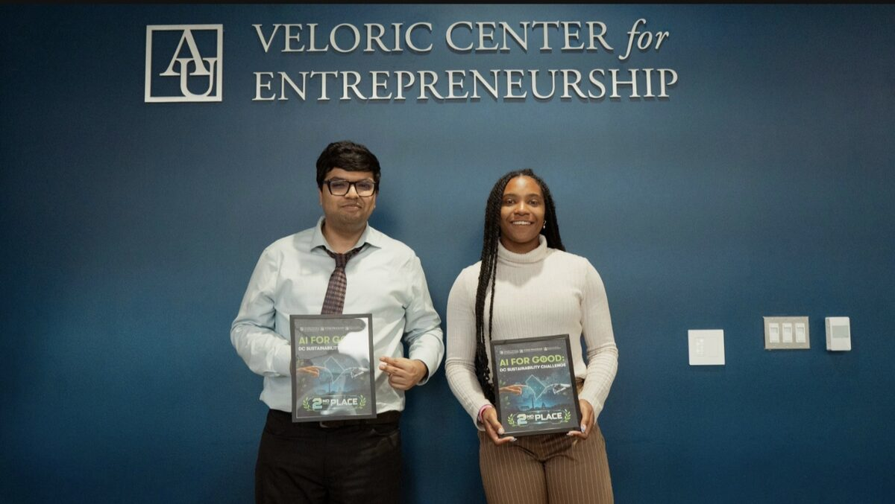

The problem
Road salt keeps streets passable, but excess salt runs off into streams and damages vegetation and infrastructure. The research we cited found rising chloride levels in 84% of the urban streams studied (historical, multi-city evidence, not a current DC rate). Winter planners have to decide when and how to treat under uncertainty, often with temperatures hovering near freezing and precipitation switching between rain, sleet and snow.
Our question: how might DC-area winter planners use weather, pavement and site evidence to avoid unnecessary salt while still meeting access and service requirements?
Data and evidence
- Forecasts: National Weather Service air temperature, dew point, wind and precipitation up to 72 hours for five DC demonstration road points, including two bridges. In Round 1 the dashboard also pulled Xweather's modeled pavement forecast up to 24 hours. Its free tier limited us to five road points.
- Ten planning factors: we researched ten factors, from time of day and tree canopy to dew point, wind and precipitation type. Each one is marked as screened, displayed, or future work, and none carries a calibrated weight.
- Stakeholder feedback: DC's Department of Public Works described the forecast tools it already uses and its storm-based deployment packages. It confirmed that rain at the start of a storm discourages pretreatment, and it introduced the team to environment-agency (DOEE) contacts. There's no data-sharing agreement, pilot commitment or endorsement.
- Limitations: the public demo runs on synthetic storm scenarios, the five points are demonstration settings rather than verified sensors, and no DC-specific pavement model has been trained.
Approach
- Prototype: a Python/Streamlit dashboard that charts air against pavement temperature with a freezing line, raises rule-based review flags (for example, rain before snow) with plain-language briefings, and exports the evidence behind each flag as JSON.
- Evidence labeling: every value is tagged as a provider forecast, simulation, physical reference or unavailable, so gaps stay visible instead of being filled in.
- Storm Lab model: a deterministic mass-balance comparison over five lane-miles. The baseline is 200 lb per lane-mile × 2 rounds = 2,000 lb of salt. The alternative is 160 lb per lane-mile × 1 round = 800 lb. Sensitivity analysis then adds back the retreatment a storm might still need.



Findings
- The saving is conditional. The 60% reduction holds only if no further treatment is needed. If the storm still needs 1,200 lb later, the saving is gone. That's why the evaluation plan measures the whole storm, not just the first application.
- 40–60% in simulated pilot scenarios. Our test runs used invented storm data, so the range is hypothetical, and the chart shows how retreatment can erase it.
- Salt savings alone don't pay for software. A 1,200 lb saving is about 0.6 tons per storm. At a cited Maryland procurement price of $91.20 per ton, that's roughly $55 per storm. So the team positioned SaltWise as operational decision support, not guaranteed salt savings.
- DC already has sophisticated tools. Public Works' feedback showed that rain-before-snow timing is an established practice, so the prototype's role is to make assumptions and evidence gaps visible, not to claim better forecasts.
Recommendations
- Recruit one planning partner and agree on success and stop criteria up front.
- Replay past storms using only the information available at each decision time, then run a supervised shadow pilot with existing operations fully in control.
- Measure salt per comparable lane-mile alongside road service, missed hazards, planner overrides and planning time. Monitor runoff chloride where practical.
- Test pricing (a proposed seasonal pilot license) with real buyers before claiming demand.
StatusThese are proposals. Nothing has been piloted, and no salt savings or environmental benefits have been measured.
My contribution
What I did
- Led market research and the sustainability research behind the project.
- Researched forecast APIs and chose Xweather for air and pavement temperature, so the AI assistant worked from the right inputs.
- Chose to focus the stakeholder pitch on Michigan Avenue NE: one of the five roads the free API tier allowed, and the one with the highest traffic, so it gave us the most data in a short window.
- Led the feasibility work: contacted DC's Department of Public Works and Department of Transportation to understand their current procedures, so our solution stayed realistic.
- Built the framework for the current dashboard, the version in the live demo.
- Made the agent's suggestions and human-review instructions reflect DC-specific guidelines, cross-checking the legality of proposed recommendations and how often salt could be applied.
What my teammates did
- Designed parts of the dashboard I wasn't involved in.
- The memo, deck and Storm Lab model were team deliverables.

“As a Double Eagle who came up through the Kogod School of Business, I’ve had practicality drilled into me.”
Limitations
- Scenarios are synthetic and the savings are arithmetic, not field results. Less salt alone doesn't prove equal safety or environmental benefit.
- Customer segments, prices and willingness to pay are untested hypotheses.
- AI assisted research and development, but the running product uses deterministic Python rules. There's no trained DC pavement model.
Supporting materials
- Kogod School of Business news feature (Nov 2026)“How Do Business Students Gain Hands-On Experience Through Competitions?” Covers the top three teams, including SaltWise DC.
- Live prototype (Streamlit)Opens the public demo. It may take a moment to wake up.
- Round 2 pitch deck with Q&A backup (PDF, 25 slides)Portfolio copy: teammates' names removed, and the impact slide labels the 40–60% range as simulated.
- Round 1 business memo (PDF, 7 pages)Research, ten planning factors, prototype description and market analysis.